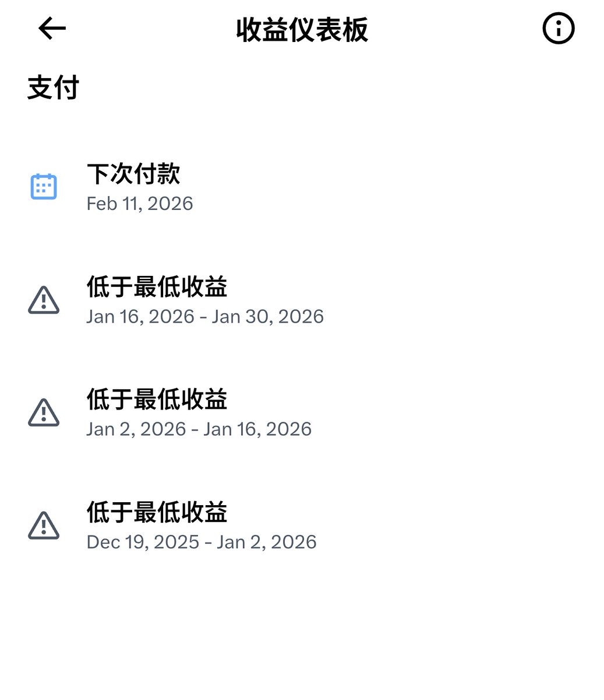

mycbxzd
@axzamyzed
@Weiyu320169 唉我的5M和500fo都没达成呢还

weiyu.eth
@Weiyu320169
今天又到了老马发工资的日子
看着时间线上大家的工资，说实话替大家感到高兴，但也是狠狠的羡慕了
说起来不怕大家笑话，这已经是我第三个周期没领到工资了，每个周期都在期待能有个低保，但真的还是挺难的
有大伙和我一样没领到工资嘛，一起报团取暖吧🥹🥹
#蓝V互关 https://t.co/BKy8xaD3Xy